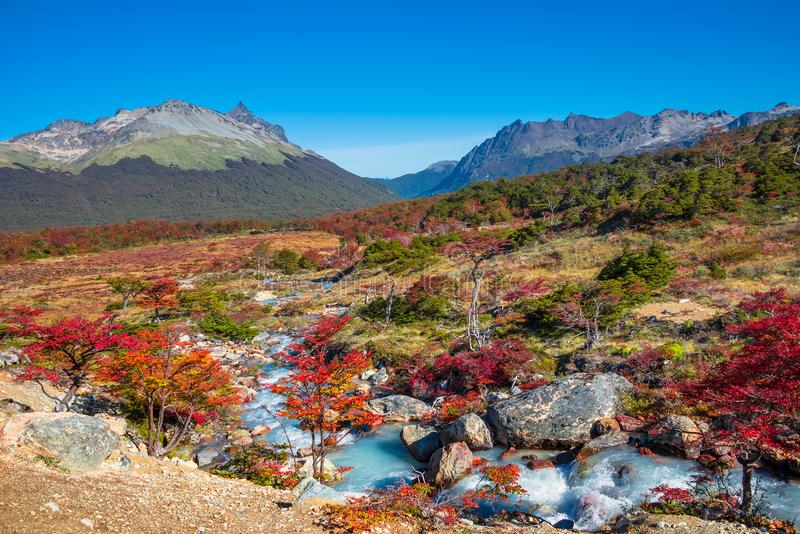
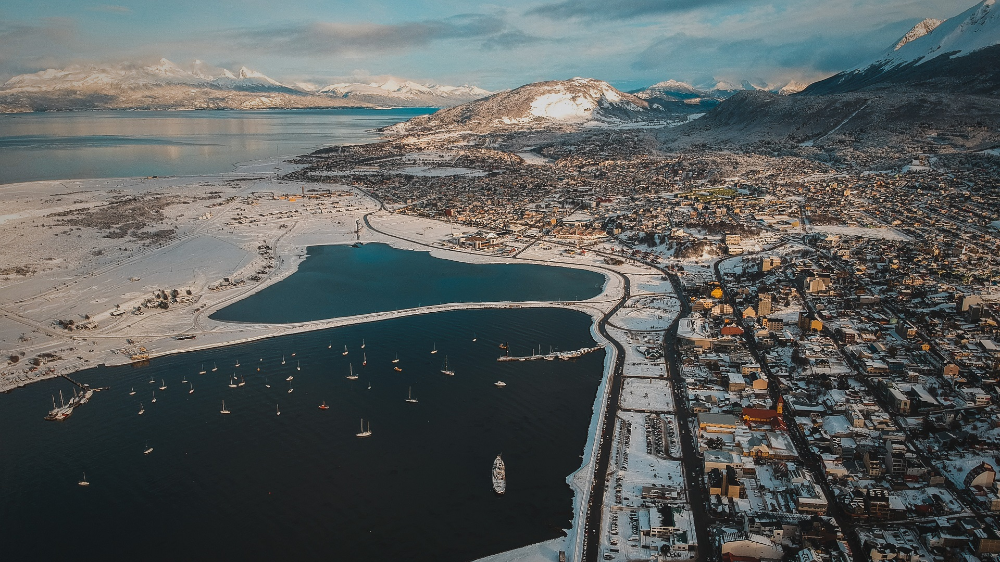
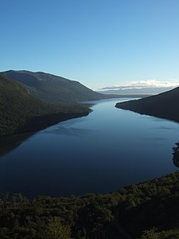
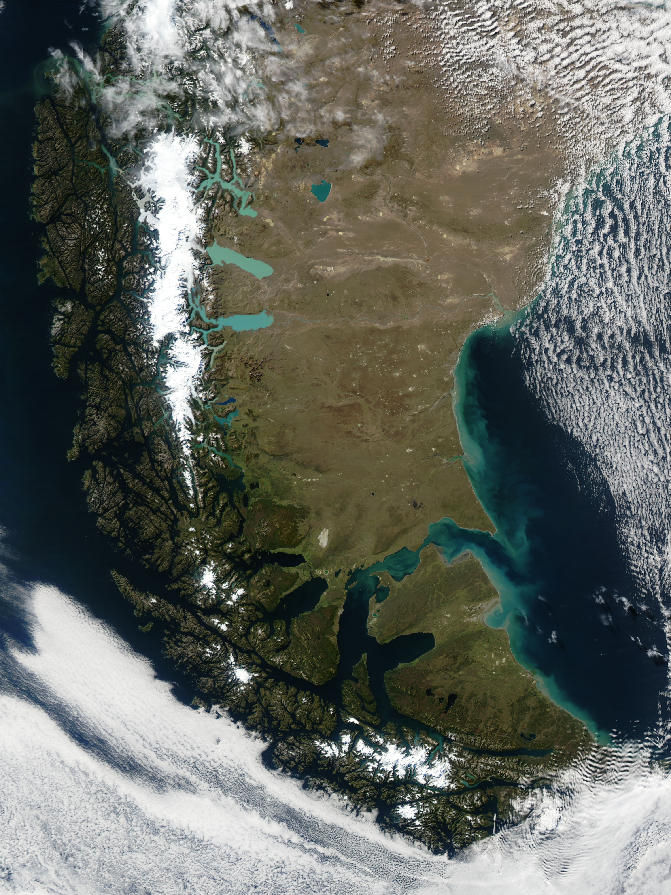
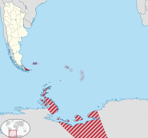

Tierra del Fuego, Antártida e Islas del Atlántico Sur, en el texto de la Constitución provincial: Provincia de Tierra del Fuego, Antártida e Islas del Atlántico Sur, es una de las veintitrés provincias que conforman la República Argentina. A su vez, es uno de los veinticuatro estados autogobernados o jurisdicciones de primer orden que conforman el país, y uno de los veinticuatro distritos electorales legislativos nacionales. Su capital es Ushuaia y su ciudad más poblada es Río Grande. Está ubicada en la región patagónica, en el extremo sur de la Argentina, y ocupa un amplio territorio insular, marítimo y antártico, que se extiende desde la Isla Grande de Tierra del Fuego al polo Sur, incluyendo la isla de los Estados, las islas Malvinas, las islas del Atlántico Sur, la península Antártica, formando un triángulo cuyos lados son los meridianos 74°O y 25°O y su vértice el polo Sur. En la porción americana, la provincia limita al norte con la provincia de Santa Cruz, al oeste con Chile y al sur del canal de Beagle, también con Chile. En la Antártida, la provincia también limita al oeste con Chile, aunque los límites no están establecidos. Con 1 002 445 km² es la jurisdicción de primer orden más extensa (incluidos los territorios en litigio) y alizacion 3.2 hidrografia Estaba organizada como territorio nacional hasta el 26 de abril de 1990, año en el que obtuvo la categoría de provincia a través de la sanción de la Ley Nacional N.º 23 775 del Congreso de la Nación Argentina.

Tierra del Fuego: Fernando de Magallanes (1520) la nombró «Tierra de los fuegos» al ver desde su barco las fogatas de los onas o selk'nam.11 Ushuaia: Nombre que deriva de las voces ushu (que significa ‘al fondo’) y uaia (‘caleta, bahía o puerto’), en idioma yámana, y significa ‘bahía que penetra hacia el oeste’. Río Grande: Se debe al río Grande, a cuyas márgenes se asienta la ciudad. Este nombre comienza a usarse en 1889. Tolhuin: En idioma selk'nam significa ‘corazón’, y se encuentra en el corazón de la isla. Lago Escondido: Nombre dado por la cercanía al lago Escondido.
Bandera Bandera de la Provincia de Tierra del Fuego, Antártida e Islas del Atlántico Sur. Artículo principal: Bandera de la provincia de Tierra del Fuego, Antártida e Islas del Atlántico Sur La bandera provincial fue resultado de un concurso público realizado en 1999, en el cual se eligió el diseño realizado por la arquitecta Teresa Martínez bajo el seudónimo de “Albatros”. Se compone de tres franjas diagonales, una naranja, otra azul celeste y una franja blanca central, en forma de albatros volando libremente y en dirección ascendente, del sector naranja al sector azul celeste. La franja naranja, ubicada en el sector inferior izquierdo, simboliza al fuego incluido en el nombre provincial, que alude a la presencia indígena que pobló originariamente el territorio y es una representación estilizada del contorno del sector argentino de la isla Grande de Tierra del Fuego. La franja azul celeste, ubicada en el sector superior derecho, representa los espacios marítimos y aéreos que conectan a una provincia bicontinental, integrada por gran cantidad de islas, con el mismo color que utiliza la bandera nacional; esta franja contiene cinco estrellas de la Cruz del Sur, que simbolizan las islas Malvinas, las islas Orcadas del Sur, las islas Georgias del Sur, las islas Sandwich del Sur y la Antártida Argentina, incluidas en el territorio provincial y cuya soberanía reclama la Argentina.
Escudo Escudo de la provincia de Tierra del Fuego, Antártida e Islas del Atlántico Sur. Artículo principal: Escudo de la provincia de Tierra del Fuego, Antártida e Islas del Atlántico Sur El escudo provincial fue aprobado en 1992, luego de un concurso público en el que se eligió el diseño de Rosana Giménez, bajo el seudónimo de «Klewel»,palabra haush que significa «buena suerte». Al igual que la bandera tiene como figura dominante al albatros, a la manera de contorno protectorio, con los colores de la bandera nacional. En su centro contiene un óvalo rodeado de llamas rojas, simbolizando el fuego incluido en el nombre de la provincia y la presencia indígena originaria. El óvalo central incluye cuatro pingüinos, ave característica y simbólica de la región austral, detrás de los cuales puede verse el mar y dos montañas, una de ellas nevadas, de las que asoma la luz del sol.
El logo oficial de la provincia es una bandera ondeando.

Superficie sin incluir los territorios en disputa: 21 571 km², incluyendo únicamente el sector argentino de la isla Grande de Tierra del Fuego, la isla de los Estados y otras islas menores adyacentes. Superficie incluyendo los territorios en litigio y los reclamados: 1 002 445 km², se suma a la superficie anterior la de la Antártida Argentina y las islas del Atlántico Sur. Las tierras y aguas reclamadas por Argentina en la Antártida comprenden el sector entre los meridianos 25º O y 74º O, el paralelo 60º S y el Polo Sur donde se encuentran también las islas Orcadas del Sur. Esta reclamación se superpone parcialmente con la de Chile (Territorio Chileno Antártico) y totalmente con la del Reino Unido (Territorio Antártico Británico), sin embargo, estas reclamaciones antárticas se encuentra afectadas por el Tratado Antártico que congeló las disputas de soberanía, impidiendo que se realicen otras o se amplíen las ya existentes. Las islas del Atlántico Sur comprenden a los archipiélagos de las Malvinas, Georgias del Sur (incluyendo a las rocas Aurora y Clerke) y Sandwich del Sur; se encuentran bajo administración británica, pero según la ONU su soberanía está en litigio con la Argentina.
Limita -su sector patagónico- al oeste y al sur con Chile, al norte y al este con el océano Atlántico, al sur con el Pacífico por el Canal Beagle y al sudeste con el Antártico. En cuanto a sus límites en la Antártida Argentina y las Antillas del Sur o islas del Atlántico Sur, véase los respectivos artículos.
La provincia integra la Región Patagónica, lo cual está explicitado en su Constitución. La región fue creada por el tratado firmado en la ciudad de Santa Rosa el 26 de junio de 1996. Sus fines están expresados en el artículo 2 del tratado
El más importante de sus ríos es el río Grande, de 240 km de longitud, de los cuales 100 km surcan el territorio argentino, y desemboca junto a la ciudad del mismo nombre. Hacia el norte se destaca el breve curso del río Cullen, y hacia el sur el río San Pablo, sobre la costa atlántica; en las cercanías de Ushuaia, el río Olivia, donde hay una planta de energía hidroeléctrica que abastecía a la ciudad, y los ríos Pipo y Lapataia. Otros ríos: Moneta, Ona, Lasifashaj, Fuego, Ewan, y otros desconocidos e inaccesibles por otro medio que no sea el marítimo. Los cordones serranos están separados por valles y lagos glaciarios, como el lago Fagnano o Cami, el Escondido, y el Roca o Acigami. Al norte del primero de estos, en una zona de sierras más bajas, están también los lagos Yehuin y Chepelmut. Estos lagos son factores para bellos paisajes entornados por bosques y cordilleras siempre nevadas. En muchas zonas existen densas turberas rodeadas de no menos denso bosque, los castores construyen embalses formando un gran número de pequeñas lagunas también en áreas forestales.

En el norte de la isla Grande de Tierra del Fuego se encuentran suaves colinas morrénicas que guardan testimonio de la glaciación cuartaria. En el litoral marino las costas son bajas y arenosas, las cuales se van elevando hacia el sur. La porción meridional de la isla se encuentra recorrida de este a oeste por la sección fueguina de la cordillera de los Andes. La mayor altura, según las obtenidas por foto-restitución por la Subsecretaría de Catastro de la Provincia de Tierra del Fuego, corresponde al cerro Vinciguerra (1499 m); aunque existe la duda de si el monte Cornú, sin restitución, pueda ser más elevado. Le sigue en altura el monte Alvear, con 1406 m (de acuerdo con datos de la misma subsecretaría). Las máximas elevaciones, sin embargo, se ubican en el sector antártico reclamado por la República Argentina (Ej.: el monte Chiriguano, de 3.660 msnm).


| características | Datos |
|---|---|
| capital | Ushuaia |
| Idioma oficial | Español |
| Entidad | Provincia |
| Gobernador | Gustavo Melella (FORJA-FDT) |
| Vicegobernadora Legislatura |
Mónica Urquiza (MOPOF) |
| diputados Senadores |
Legislatura de Tierra del Fuego 5 bancas Matías Rodríguez María Eugenia Duré (PJ) Pablo Blanco (UCR) (PJ) |